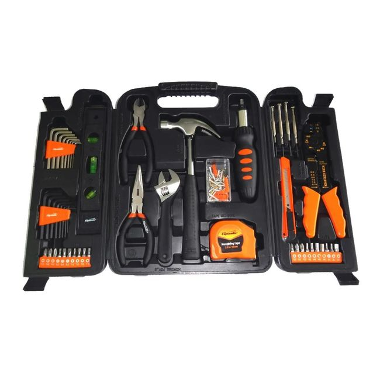

Ближе всего к DEKO
Sparta, 129 предметов, чемодан
Молоток, пассатижи, ключи, прецизионные отвёртки, биты, шестигранники мм и дюймы, рулетка, уровень, нож; часть «129» это шурупы, гвозди и дюбели
около R$ 110–150цена не подтверждена
Самый ходовой бытовой чемодан в Бразилии и прямой аналог DEKO по составу. В Telhanorte сейчас «indisponível», на Amazon и Mercado Livre страницы закрыты для проверки, диапазон цены взят из сводок поиска. Сталь проще, чем у Tramontina, для квартиры этого хватает.
Фото и состав: карточка Telhanorte (нет в наличии). Цены: сводки поиска по Americanas, Shopee и Mercado Livre.